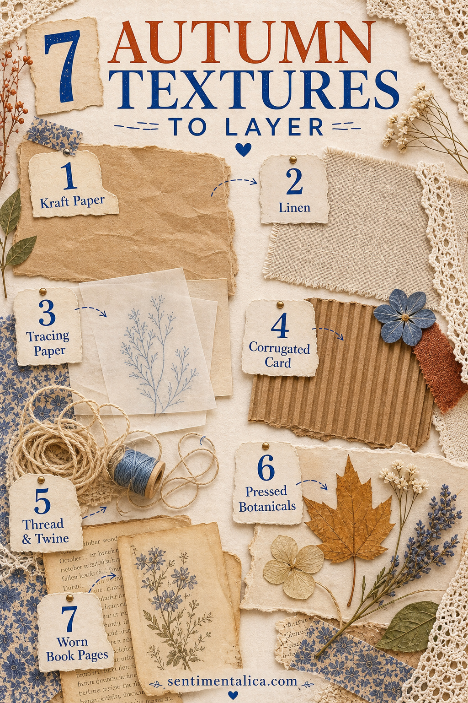
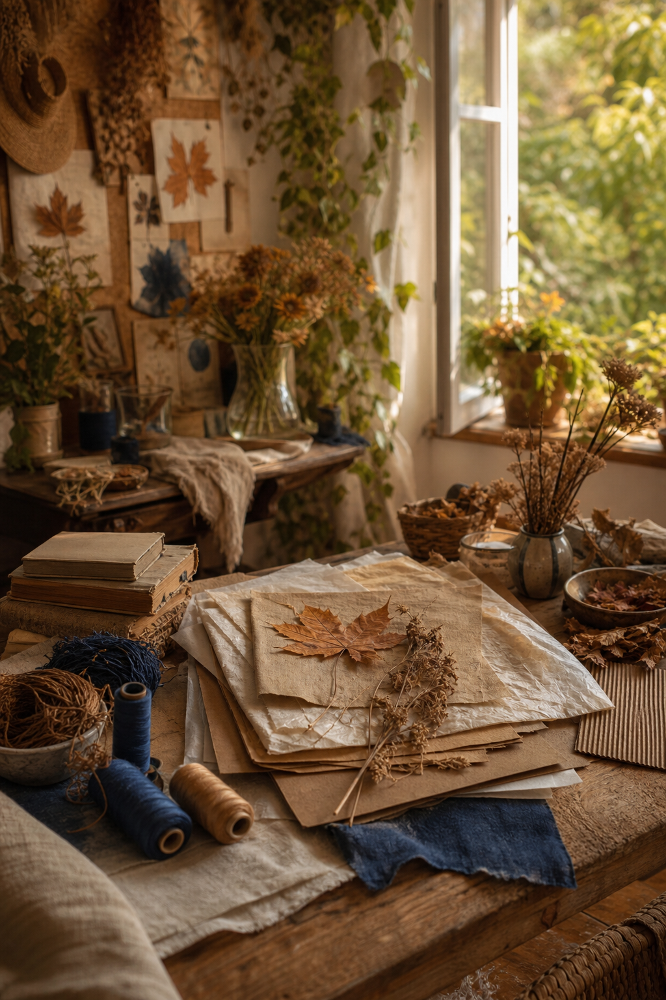

An autumn journal page can feel seasonal before you add a single leaf or pumpkin. Texture does much of the work: rough paper beside something sheer, a soft thread crossing a firm edge, or a worn book page against clean cream card.
The secret is contrast. If every layer is distressed, nothing feels especially old. If every material is soft, the page loses structure. Choose one foundation texture, one lighter texture, and one small tactile accent for a page that feels rich without becoming bulky.

1. Kraft paper for warmth and structure
Kraft paper brings the color of cardboard boxes, bakery bags, and dried leaves. Use it as a pocket, strong border, or backing behind a pale receipt. Its plain surface also gives patterned scraps somewhere to rest.
Tear one edge and cut another cleanly. That small contrast keeps the page from looking uniformly rustic. Grocery bags work well when they are clean, flat, and free from food marks.
2. Linen or cotton for a quiet softness
A narrow strip of fabric can suggest coats, tablecloths, and the return of layered clothing. Choose washed linen, cotton tape, or a piece of an old handkerchief. Frayed edges add movement, but trim long loose threads that may catch when the journal closes.
Attach fabric with a few stitches, a small amount of glue, or a paper hinge. Let some of the textile remain free so it still feels like fabric rather than patterned paper.
3. Tracing paper for mist and changing light
Tracing paper softens whatever sits underneath it. Place it over a photograph of bare branches, a dark botanical, or handwriting you want to reveal slowly. It can suggest fog without adding another printed motif.
Write on tracing paper with a pencil or a pen tested on a scrap first. A single date, weather note, or short line is often enough.

4. Corrugated card for one rough edge
Peel the smooth outer layer from a small piece of cardboard to expose the ridges. Use only a narrow strip or tiny tag. Corrugated card is visually strong and can make a journal too thick when used across a whole page.
Its warm shadows look especially good beside a smooth photograph, clean label, or pale piece of writing paper.
5. Thread and twine for direction
Thread can guide the eye from one part of a spread to another. Run dark brown thread beneath a label, tie fine twine around a folded note, or add three simple stitches near a photograph.
Avoid placing knots directly beneath another bulky element. If a closure needs strength, use thin waxed thread and keep the knot near an outer edge.
6. Pressed botanicals for a real seasonal trace
A tiny fern, flat leaf, grass head, or fallen petal can carry the place and date of a walk. Press botanicals thoroughly before they enter the journal, and avoid anything damp, thick, protected, or unfamiliar.
You can also photograph or trace a fragile specimen instead of attaching it. Write where it was found so the page holds more than a decorative shape.
7. Worn book pages for history
Choose damaged, incomplete, or unwanted books rather than taking pages from something valuable. Look for warm paper, generous margins, interesting chapter numbers, or words that quietly suit your memory.
Use a fragment rather than a whole sheet. Turn it sideways, fold it into a tab, or let only one line remain readable. Pairing old print with your own handwriting makes the page feel connected across time.
A balanced three-texture recipe
- Foundation: use kraft paper or a worn book-page fragment.
- Soft layer: add tracing paper or a narrow piece of linen.
- Finishing detail: choose thread or one pressed botanical.
Add a photograph, receipt, or written memory after the textures are arranged. The materials should support what you are saving rather than becoming the entire reason for the page.
Texture feels most beautiful when each material has a different job.
Close the journal and check its thickness before adding more. If the spread buckles, remove the heaviest layer or replace it with a photograph of the texture. Autumn richness can come from contrast and restraint, not only from quantity.
Find more calm, practical page-building guides in the Sentimentalica journal.